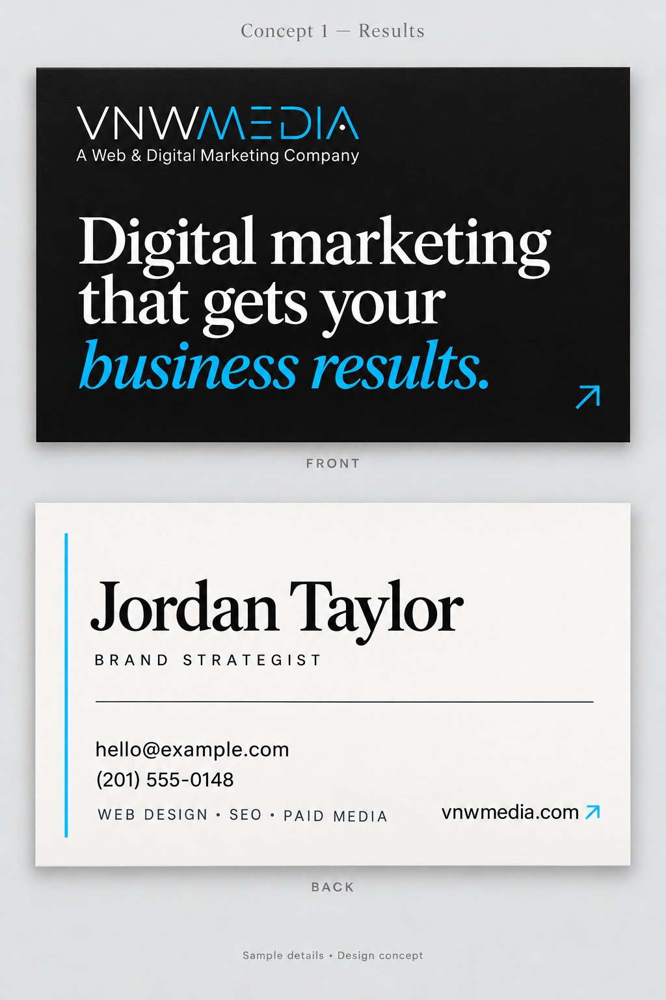
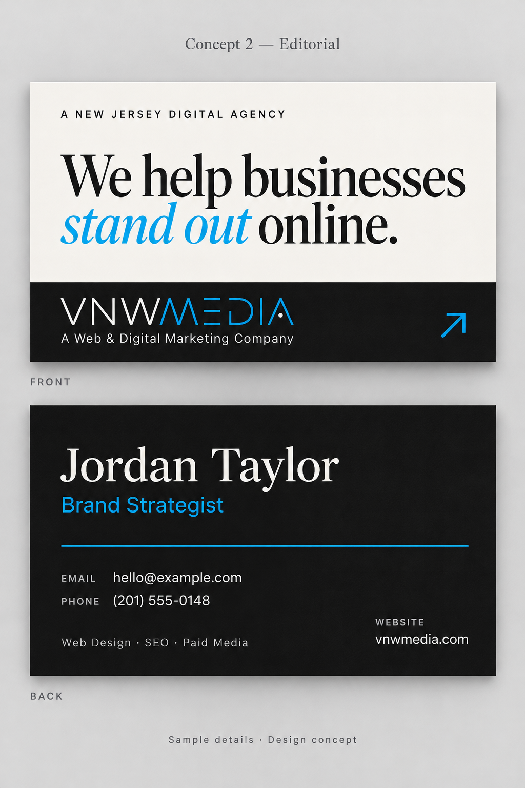
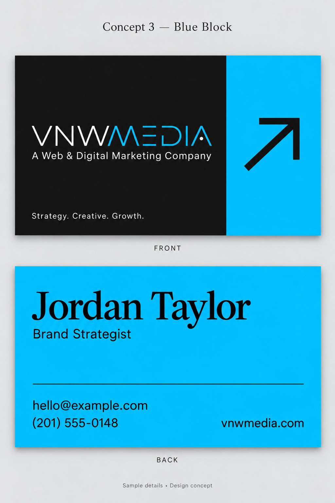
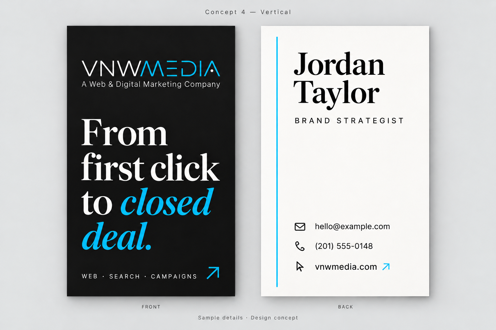
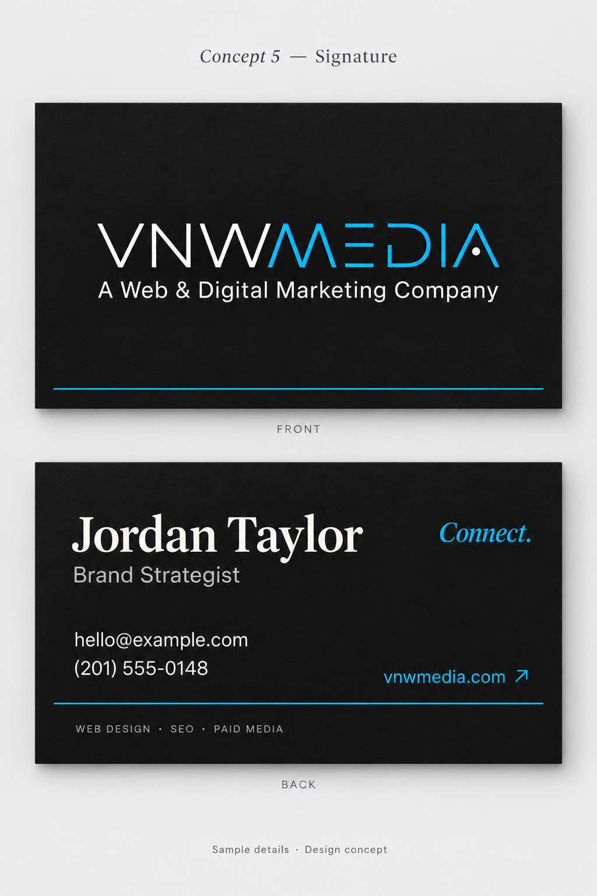

Concept 01 · Recommended
Results
A bold headline from the homepage, expressive blue italics, and a crisp ivory contact side. The closest translation of your new website.
Horizontal · Front & back
View full resolution
Concept 02
Editorial
Warm ivory and confident editorial type, balanced by a charcoal reverse. Refined, clear, and unmistakably an agency.
Horizontal · Front & back
View full resolution
Concept 03
Blue Block
A vivid cyan reverse and a strong graphic arrow. The most energetic option, with very clear logo and contact hierarchy.
Horizontal · Front & back
View full resolution
Concept 04
Vertical
A vertical format with a statement headline. Different in the hand, spacious on the contact side, and built around the website’s editorial voice.
Vertical · Front & back
View full resolution
Concept 05
Signature
A large centered logo on charcoal, paired with understated contact typography. A restrained, confident brand-first option.
Horizontal · Front & back
View full resolution